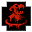
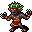

英語版 CrawlWiki の記事「Brothers in Arms」(0.34 向け、2026-05-24 版)の翻訳です。原文の著者は編集履歴をご覧ください。
このページはモンスターの呪文についての記事だ。トログの能力についてはトログ#授かる能力を参照。

戦友の召喚はモンスター専用の呪文で、トログの同名の能力とほぼ同じ働きをする。つまりバーサーク状態のモンスターを1体呼び出す。今のところこの呪文を使うのはスプリガンの狂戦士だけで、バーサーク状態の北極熊、象、人食いヤクのどれかを呼び出す。
戦友の召喚を唱える敵は次のとおり。
